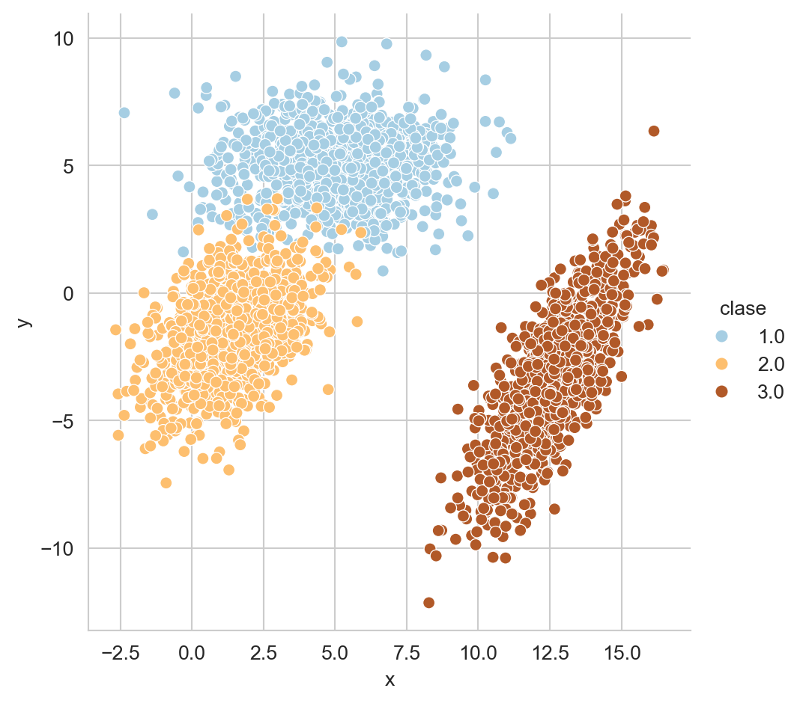
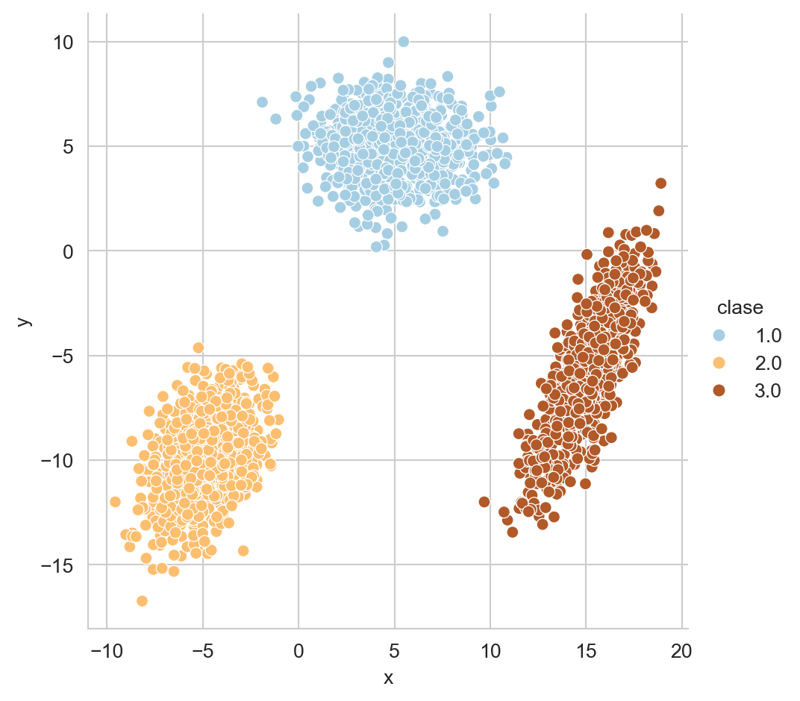

from sklearn.datasets import load_breast_cancer,\
load_diabetes,\
load_digits, load_iris,\
load_wine
from scipy.stats import multivariate_normal
from matplotlib import pylab as plt
import numpy as np
import pandas as pd
import seaborn as snsApéndice C — Conjunto de Datos
El objetivo de este apéndice es listar los conjuntos de datos utilizados en el curso.
Paquetes usados
C.1 Problemas Sintéticos
En esta sección se presentan los problemas sintéticos que corresponden aquellos problemas en los que se conocen todos los parámetros y se usan para mostrar algunas características de los algoritmos.
C.2 Mezcla de Clases
p1 = multivariate_normal(mean=[5, 5],
cov=[[4, 0], [0, 2]])
X_1 = p1.rvs(size=1000)
p2 = multivariate_normal(mean=[1.5, -1.5],
cov=[[2, 1], [1, 3]])
X_2 = p2.rvs(size=1000)
p3 = multivariate_normal(mean=[12.5, -3.5],
cov=[[2, 3], [3, 7]])
X_3 = p3.rvs(size=1000)Figura C.1 muestra estas tres distribuciones.
Código
D = np.concatenate((X_1, X_2, X_3))
clase = [1] * 1000 + [2] * 1000 + [3] * 1000
D = np.concatenate((D, np.atleast_2d(clase).T), axis=1)
df = pd.DataFrame(D, columns=['x', 'y', 'clase'])
_ = sns.relplot(data=df, kind='scatter', x='x',
y='y', hue='clase')

C.2.1 Clases Separadas
X_1 = multivariate_normal(mean=[5, 5],
cov=[[4, 0], [0, 2]]).rvs(1000)
X_2 = multivariate_normal(mean=[-5, -10],
cov=[[2, 1], [1, 3]]).rvs(1000)
X_3 = multivariate_normal(mean=[15, -6],
cov=[[2, 3], [3, 7]]).rvs(1000)Este problema se muestra en la Figura C.2.
Código
D = np.concatenate((X_1, X_2, X_3))
clase = [1] * 1000 + [2] * 1000 + [3] * 1000
D = np.concatenate((D, np.atleast_2d(clase).T), axis=1)
df = pd.DataFrame(D, columns=['x', 'y', 'clase'])
_ = sns.relplot(data=df, kind='scatter', x='x',
y='y', hue='clase')

C.3 Problemas de Clasificación
En esta sección se listan los problemas de clasificación utilizados durante el curso.
C.3.1 Breast Cancer Wisconsin
El conjunto de datos de Breast Cancer Wisconsin se obtiene con el siguiente código.
D, y = load_breast_cancer(return_X_y=True)C.3.2 Iris
Un conjunto clásico en problemas de clasificación es el problema del Iris que se encuentra con las siguientes instrucciones.
D, y = load_iris(return_X_y=True)C.3.3 Números
El conjunto de Digits es un conjunto de clasificación donde se trata de identificar el número escrito en una imagen; este conjunto de datos se descarga utilizando las siguientes instrucciones.
D, y = load_digits(return_X_y=True)C.3.4 Vino
El conjunto de vino es un problema que tiene 3 clases, 178 ejemplos y se encuentra representado en \(\mathbb R^{13};\) este problema se obtiene con las siguientes instrucciones.
D, y = load_wine(return_X_y=True)C.4 Problemas de Regresión
En esta sección se listan los problemas de regresión utilizados para ejemplificar los algoritmos y su rendimiento.
C.4.1 Problema Sintético
El siguiente ejemplo es un problema de regresión sintético que se forma de la suma de dos funciones trascendentales como se muestra en el siguiente código.
X = np.linspace(-5, 5, 100)
y = np.sin(X) + 0.3 * np.cos(X * 3.)La Figura C.3 muestra este problema sintético.
Código
df = pd.DataFrame(dict(X=X, y=y))
df.set_index('X', inplace=True)
fig = sns.relplot(df, kind='line')
C.4.2 Diabetes
El conjunto de datos Diabetes es un problema que se puederecuperar usando el siguiente código.
D, y = load_diabetes(return_X_y=True)